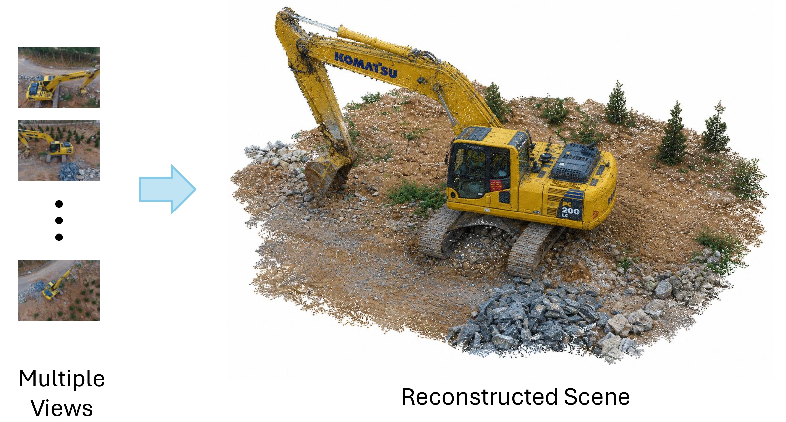
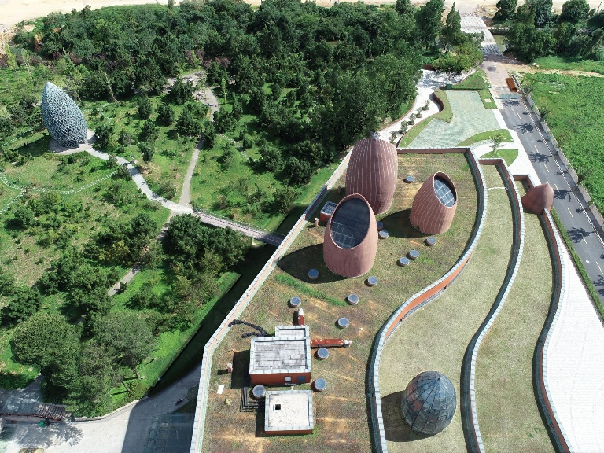
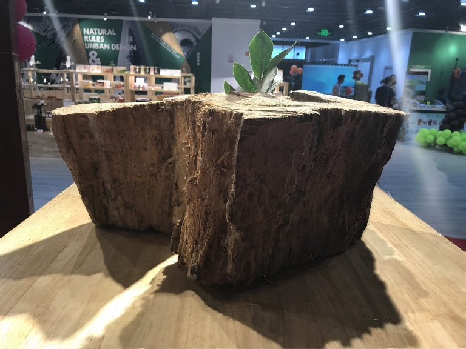
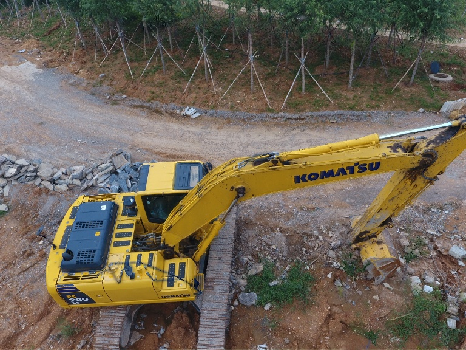
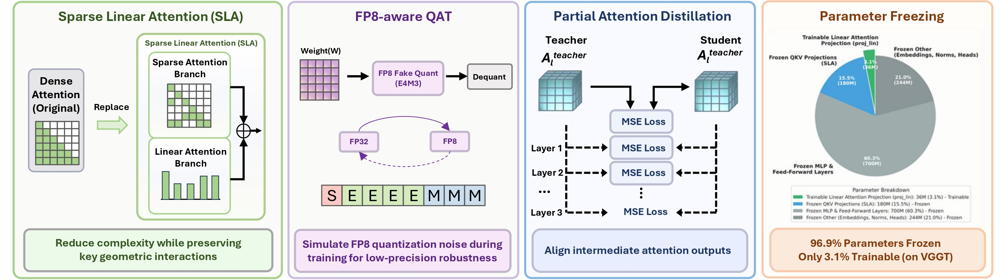
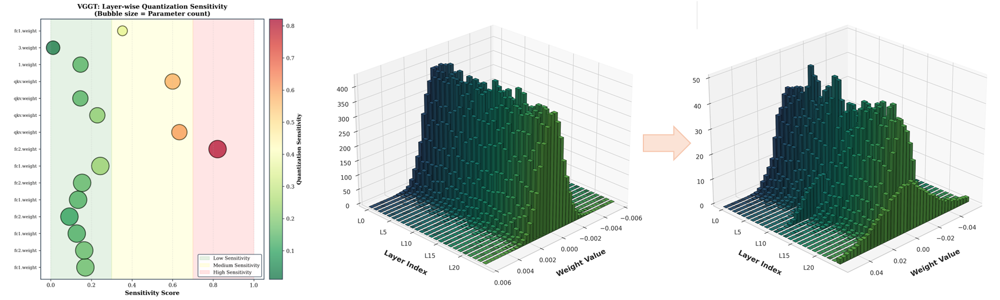

Transformer-based 3D reconstruction has emerged as a powerful paradigm for recovering geometry and appearance from multi-view observations, offering strong performance across challenging visual conditions. As these models scale to larger backbones and higher-resolution inputs, improving their efficiency becomes increasingly important for practical deployment. However, modern 3D transformer pipelines face two coupled challenges: dense multi-view attention creates substantial token-mixing overhead, and low-precision execution can destabilize geometry-sensitive representations and degrade depth, pose, and 3D consistency. To address the first challenge, we propose Lite3R, a model-agnostic teacher-student framework that replaces dense attention with Sparse Linear Attention to preserve important geometric interactions while reducing attention cost. To address the second challenge, we introduce a parameter-efficient FP8-aware quantization-aware training (FP8-aware QAT) strategy with partial attention distillation, which freezes the vast majority of pretrained backbone parameters and trains only lightweight linear-branch projection layers, enabling stable low-precision deployment while retaining pretrained geometric priors. We further evaluate Lite3R on two representative backbones, VGGT and DA3-Large, over BlendedMVS and DTU64, showing that it substantially reduces latency (1.7-2.0×) and memory usage (1.9-2.4×) while preserving competitive reconstruction quality overall. These results demonstrate that Lite3R provides an effective algorithm-system co-design approach for practical transformer-based 3D reconstruction.





Overall framework of Lite3R. Starting from a dense pretrained 3D reconstruction teacher, Lite3R constructs a lite student by replacing dense attention with Sparse Linear Attention, freezing the inherited backbone projections, and training only lightweight linear-branch projection layers under FP8-aware quantization-aware training. Partial attention distillation preserves intermediate geometric priors, and the resulting student is converted to an efficient FP8-compatible deployment model.
Comprehensive visualization of Lite3R main results across nine experimental settings. The bar charts summarize the key quality and efficiency metrics reported in the main paper, highlighting how Lite3R compares with the corresponding higher-precision baselines across different backbones, datasets, and evaluation dimensions.
Visual comparison of the component-ablation results on VGGT over BlendedMVS. The chart shows that removing SLA or FP8-aware QAT recovers only part of the final quality-efficiency tradeoff.

Analysis of Lite3R adaptation sensitivity. Left: layer-wise quantization sensitivity of VGGT, showing that different backbone stages respond unevenly to low-precision perturbations. Right: change pattern of the linear-branch projection layers during training, illustrating how continued FP8-aware QAT increases drift in the small trainable subspace and helps explain the weaker stability of longer schedules.
@article{zhang2026lite3r,
title={Lite3R: A Model-Agnostic Framework for Efficient Feed-Forward 3D Reconstruction},
author={Zhang, Haoyu and Zhang, Zeyu and Zhou, Zedong and Zhao, Yang and Tang, Hao},
journal={arXiv preprint arXiv:2605.11354},
year={2026}
}